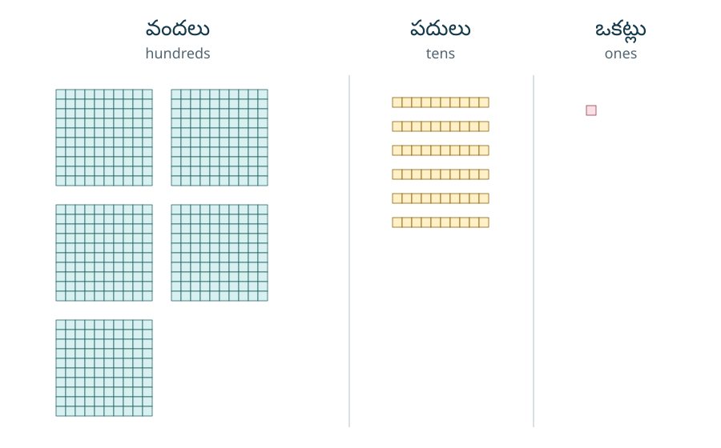
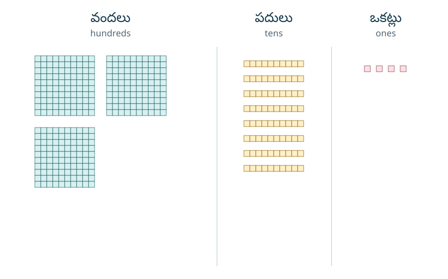
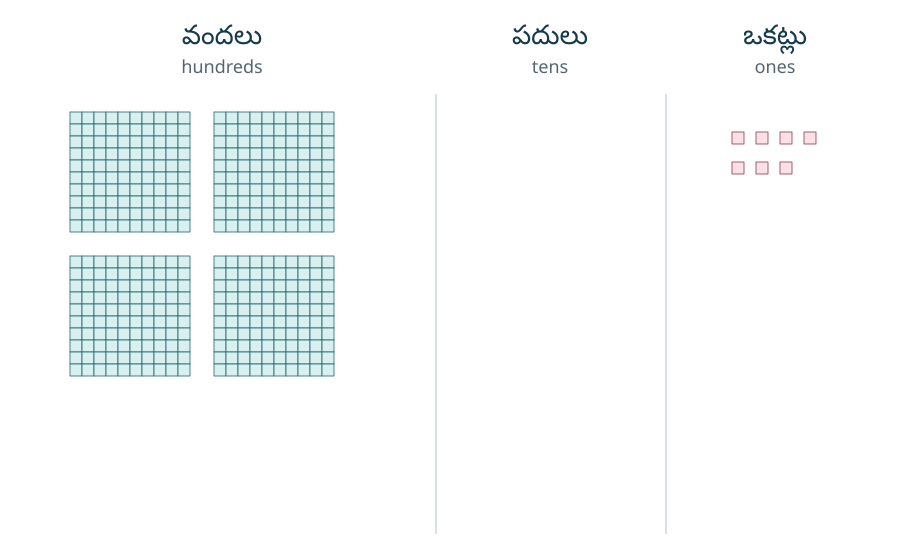
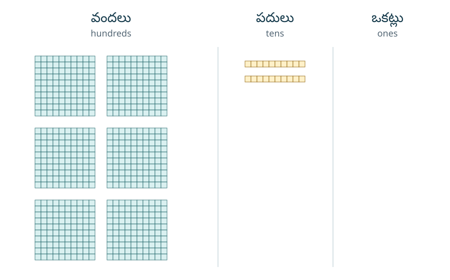
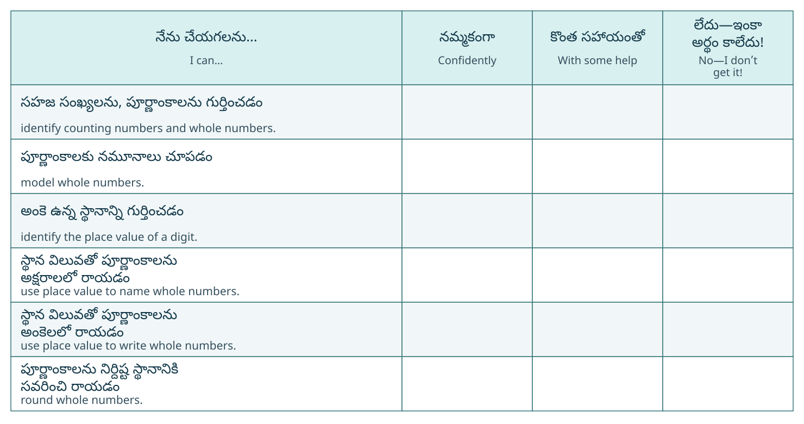
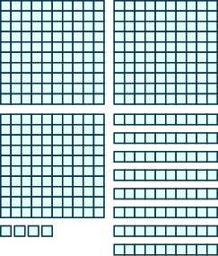
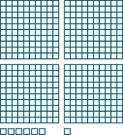
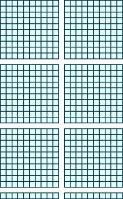
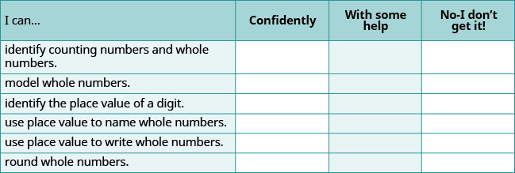

మూలపాఠం అనువాదం · Telugu source translation
అభ్యాసంతో నైపుణ్యం
సహజ సంఖ్యలను, పూర్ణాంకాలను గుర్తించడం
కింది అభ్యాసాల్లో ఇచ్చిన సంఖ్యలలో ⓐ సహజ సంఖ్యలు ఏవో, ⓑ పూర్ణాంకాలు ఏవో గుర్తించండి.
మూలంలో ఇచ్చిన జవాబును చూడండి
- ⓐ 5, 125
- ⓑ 0, 5, 125
మూలంలో ఇచ్చిన జవాబును చూడండి
- ⓐ 50, 221
- ⓑ 0, 50, 221
పూర్ణాంకాలకు నమూనాలు చూపడం
కింది అభ్యాసాల్లో బ్లాకులతో చూపిన సంఖ్యను స్థాన విలువ ఆధారంగా కనుక్కోండి.
అన్ని నిలువు వరుసలను చూడటానికి పటాన్ని అడ్డంగా జరపండి.

మూలంలో ఇచ్చిన జవాబును చూడండి
561
అన్ని నిలువు వరుసలను చూడటానికి పటాన్ని అడ్డంగా జరపండి.

అన్ని నిలువు వరుసలను చూడటానికి పటాన్ని అడ్డంగా జరపండి.

మూలంలో ఇచ్చిన జవాబును చూడండి
407
అన్ని నిలువు వరుసలను చూడటానికి పటాన్ని అడ్డంగా జరపండి.

అంకె ఉన్న స్థానాన్ని గుర్తించడం
కింది అభ్యాసాల్లో ఇచ్చిన అంకెలు ఏ స్థానాల్లో ఉన్నాయో ఆ స్థానాల పేర్లు రాయండి.
- ⓐ 9
- ⓑ 6
- ⓒ 0
- ⓓ 7
- ⓔ 5
మూలంలో ఇచ్చిన జవాబును చూడండి
- ⓐ వేల స్థానం
- ⓑ వందల స్థానం
- ⓒ పదుల స్థానం
- ⓓ పది వేల స్థానం
- ⓔ వంద వేల స్థానం
- ⓐ 9
- ⓑ 3
- ⓒ 2
- ⓓ 8
- ⓔ 7
- ⓐ 8
- ⓑ 6
- ⓒ 4
- ⓓ 7
- ⓔ 0
మూలంలో ఇచ్చిన జవాబును చూడండి
- ⓐ వంద వేల స్థానం
- ⓑ మిలియన్ల స్థానం
- ⓒ వేల స్థానం
- ⓓ పదుల స్థానం
- ⓔ పది వేల స్థానం
- ⓐ 8
- ⓑ 4
- ⓒ 2
- ⓓ 6
- ⓔ 7
స్థాన విలువ ఆధారంగా పూర్ణాంకాలను అక్షరాలలో రాయడం
కింది అభ్యాసాల్లో ప్రతి సంఖ్యను అక్షరాలలో రాయండి.
మూలంలో ఇచ్చిన జవాబును చూడండి
వెయ్యి డెబ్బై ఎనిమిది. మూల ఇంగ్లీషు పేరు: One thousand, seventy-eight
మూలంలో ఇచ్చిన జవాబును చూడండి
మూడు వందల అరవై నాలుగు వేల, ఐదు వందల పది. మూల ఇంగ్లీషు పేరు: Three hundred sixty-four thousand, five hundred ten
మూలంలో ఇచ్చిన జవాబును చూడండి
ఐదు మిలియన్ల, ఎనిమిది వందల నలభై ఆరు వేల, నూట మూడు. మూల ఇంగ్లీషు పేరు: Five million, eight hundred forty-six thousand, one hundred three
మూలంలో ఇచ్చిన జవాబును చూడండి
ముప్పై ఏడు మిలియన్ల, ఎనిమిది వందల ఎనభై తొమ్మిది వేల, ఐదు. మూల ఇంగ్లీషు పేరు: Thirty seven million, eight hundred eighty-nine thousand, five
రైనియర్ పర్వతం ఎత్తు అడుగులు.
మూలంలో ఇచ్చిన జవాబును చూడండి
పద్నాలుగు వేల, నాలుగు వందల పది. మూల ఇంగ్లీషు పేరు: Fourteen thousand, four hundred ten
ఆడమ్స్ పర్వతం ఎత్తు అడుగులు.
డెబ్బై సంవత్సరాల్లో గంటలు ఉంటాయి.
మూలంలో ఇచ్చిన జవాబును చూడండి
ఆరు వందల పదమూడు వేల, రెండు వందలు. మూల ఇంగ్లీషు పేరు: Six hundred thirteen thousand, two hundred
ఒక సంవత్సరంలో నిమిషాలు ఉంటాయి.
అమెరికా జనగణన విభాగం అంచనా వేసిన మయామి–డేడ్ కౌంటీ అప్పటి జనాభా
మూలంలో ఇచ్చిన జవాబును చూడండి
రెండు మిలియన్ల, ఆరు వందల పదిహేడు వేల, నూట డెబ్బై ఆరు. మూల ఇంగ్లీషు పేరు: Two million, six hundred seventeen thousand, one hundred seventy-six
షికాగో అప్పటి జనాభా
ఐదేళ్లలో అమెరికాలోని కళాశాలలు, విశ్వవిద్యాలయాల్లో మంది విద్యార్థులు ఉంటారని అంచనా వేశారు.
మూలంలో ఇచ్చిన జవాబును చూడండి
ఇరవై మూడు మిలియన్ల, ఎనిమిది వందల అరవై ఏడు వేలు. మూల ఇంగ్లీషు పేరు: Twenty three million, eight hundred sixty-seven thousand
సుమారు పన్నెండేళ్ల క్రితం కాలిఫోర్నియాలో నమోదైన మోటారు కార్లు ఉండేవి.
చైనా జనాభా చేరుతుందని అంచనా వేసిన సంఖ్య: మంది; ఆ అంచనాలో పేర్కొన్న సంవత్సరం:
మూలంలో ఇచ్చిన జవాబును చూడండి
ఒక బిలియన్, మూడు వందల డెబ్బై ఏడు మిలియన్ల, ఐదు వందల ఎనభై మూడు వేల, నూట యాభై ఆరు. మూల ఇంగ్లీషు పేరు: One billion, three hundred seventy-seven million, five hundred eighty-three thousand, one hundred fifty-six
భారతదేశ జనాభా అంచనా: మంది. ఈ అంచనా తేదీ జూలై
స్థాన విలువ ఆధారంగా పూర్ణాంకాలను అంకెలలో రాయడం
కింది అభ్యాసాల్లో అక్షరాలలో ఇచ్చిన ప్రతి పూర్ణాంకాన్ని అంకెలలో రాయండి.
నాలుగు వందల పన్నెండు. మూల ఇంగ్లీషు పేరు: four hundred twelve
మూలంలో ఇచ్చిన జవాబును చూడండి
412
రెండు వందల యాభై మూడు. మూల ఇంగ్లీషు పేరు: two hundred fifty-three
ముప్పై ఐదు వేల, తొమ్మిది వందల డెబ్బై ఐదు. మూల ఇంగ్లీషు పేరు: thirty-five thousand, nine hundred seventy-five
మూలంలో ఇచ్చిన జవాబును చూడండి
35,975
అరవై ఒక వేల, నాలుగు వందల పదిహేను. మూల ఇంగ్లీషు పేరు: sixty-one thousand, four hundred fifteen
పదకొండు మిలియన్ల, నలభై నాలుగు వేల, నూట అరవై ఏడు. మూల ఇంగ్లీషు పేరు: eleven million, forty-four thousand, one hundred sixty-seven
మూలంలో ఇచ్చిన జవాబును చూడండి
11,044,167
పద్దెనిమిది మిలియన్ల, నూట రెండు వేల, ఏడు వందల ఎనభై మూడు. మూల ఇంగ్లీషు పేరు: eighteen million, one hundred two thousand, seven hundred eighty-three
మూడు బిలియన్ల, రెండు వందల ఇరవై ఆరు మిలియన్ల, ఐదు వందల పన్నెండు వేల, పదిహేడు. మూల ఇంగ్లీషు పేరు: three billion, two hundred twenty-six million, five hundred twelve thousand, seventeen
మూలంలో ఇచ్చిన జవాబును చూడండి
3,226,512,017
పదకొండు బిలియన్ల, నాలుగు వందల డెబ్బై ఒక మిలియన్ల, ముప్పై ఆరు వేల, నూట ఆరు. మూల ఇంగ్లీషు పేరు: eleven billion, four hundred seventy-one million, thirty-six thousand, one hundred six
ప్రపంచ జనాభా ఏడు బిలియన్ల, నూట డెబ్బై మూడు మిలియన్ల మంది అని అంచనా వేశారు. మూల ఇంగ్లీషు సంఖ్యా పేరు: seven billion, one hundred seventy-three million.
మూలంలో ఇచ్చిన జవాబును చూడండి
7,173,000,000
సౌర వ్యవస్థ వయస్సు నాలుగు బిలియన్ల, ఐదు వందల అరవై ఎనిమిది మిలియన్ల సంవత్సరాలు అని అంచనా. మూల ఇంగ్లీషు సంఖ్యా పేరు: four billion, five hundred sixty-eight million.
టాహో సరస్సులో ముప్పై తొమ్మిది ట్రిలియన్ల గ్యాలన్ల నీరు పట్టగలదు. మూల ఇంగ్లీషు సంఖ్యా పేరు: thirty-nine trillion.
మూలంలో ఇచ్చిన జవాబును చూడండి
39,000,000,000,000
సమాఖ్య ప్రభుత్వ అప్పటి బడ్జెట్ మూడు ట్రిలియన్ల, ఐదు వందల బిలియన్ల డాలర్లు. మూల ఇంగ్లీషు సంఖ్యా పేరు: three trillion, five hundred billion.
పూర్ణాంకాలను నిర్దిష్ట స్థానానికి సవరించి రాయడం
కింది అభ్యాసాల్లో ఇచ్చిన సంఖ్యలను పేర్కొన్న స్థానానికి సవరించి రాయండి.
- ⓐ
- ⓑ
మూలంలో ఇచ్చిన జవాబును చూడండి
- ⓐ 390
- ⓑ 2,930
- ⓐ
- ⓑ
- ⓐ
- ⓑ
మూలంలో ఇచ్చిన జవాబును చూడండి
- ⓐ 13,700
- ⓑ 391,800
- ⓐ
- ⓑ
దగ్గరి పదులకు సవరించండి:
- ⓐ
- ⓑ
మూలంలో ఇచ్చిన జవాబును చూడండి
- ⓐ 1,490
- ⓑ 1,500
- ⓐ
- ⓑ
- ⓐ
- ⓑ
మూలంలో ఇచ్చిన జవాబును చూడండి
- ⓐ
- ⓑ
- ⓐ
- ⓑ
నిత్యజీవితంలో గణితం
చెక్కు రాయడం జోర్జ్ కొన్న కారు ధర అతను కారుకు చెక్కు ద్వారా చెల్లించాడు. కొనుగోలు ధరను అక్షరాలలో రాయండి.
మూలంలో ఇచ్చిన జవాబును చూడండి
ఇరవై నాలుగు వేల, నాలుగు వందల తొంభై మూడు డాలర్లు. మూల ఇంగ్లీషు పేరు: Twenty four thousand, four hundred ninety-three dollars
చెక్కు రాయడం మారిస్సా వంటగదిని పునర్నిర్మించడానికి అయిన ఖర్చు ఆమె కాంట్రాక్టర్కు చెక్కు రాసిచ్చింది. చెల్లించిన మొత్తాన్ని అక్షరాలలో రాయండి.
కారు కొనడం జోర్జ్ కొన్న కారు ధర ఈ ధరను కింద పేర్కొన్న ప్రమాణాల దగ్గరి గుణిజాలకు సవరించండి:
- ⓐ పది డాలర్లు
- ⓑ వంద డాలర్లు
- ⓒ వెయ్యి డాలర్లు
- ⓓ పది వేల డాలర్లు
మూలంలో ఇచ్చిన జవాబును చూడండి
- ⓐ $24,490
- ⓑ $24,500
- ⓒ $24,000
- ⓓ $20,000
వంటగదిని పునర్నిర్మించడం మారిస్సా వంటగదిని పునర్నిర్మించడానికి అయిన ఖర్చు ఈ ఖర్చును కింద పేర్కొన్న ప్రమాణాల దగ్గరి గుణిజాలకు సవరించండి:
- ⓐ పది డాలర్లు
- ⓑ వంద డాలర్లు
- ⓒ వెయ్యి డాలర్లు
- ⓓ పది వేల డాలర్లు
జనాభా చైనా జనాభా మంది ఉన్న సంవత్సరం: ఈ జనాభాను కింద పేర్కొన్న ప్రమాణాల దగ్గరి గుణిజాలకు సవరించండి:
- ⓐ ఒక బిలియన్ మంది
- ⓑ వంద మిలియన్ల మంది
- ⓒ ఒక మిలియన్ మంది
మూలంలో ఇచ్చిన జవాబును చూడండి
- ⓐ
- ⓑ
- ⓒ
ఖగోళ శాస్త్రం భూమికి, సూర్యుడికి మధ్య సగటు దూరం కిలోమీటర్లు. ఈ దూరాన్ని కింద పేర్కొన్న ప్రమాణాల దగ్గరి గుణిజాలకు సవరించండి:
- ⓐ వంద మిలియన్ల కిలోమీటర్లు
- ⓑ పది మిలియన్ల కిలోమీటర్లు
- ⓒ ఒక మిలియన్ కిలోమీటర్లు
రాతపూర్వక వివరణలు
సహజ సంఖ్యలకు, పూర్ణాంకాలకు మధ్య తేడాను మీ సొంత మాటల్లో వివరించండి.
మూలంలో ఇచ్చిన జవాబును చూడండి
జవాబులు భిన్నంగా ఉండవచ్చు. సహజ సంఖ్యల సమితికి సున్నాను చేరిస్తే పూర్ణాంకాల సమితి వస్తుంది.
సంఖ్యలను దగ్గరి విలువలకు సవరించి రాయడం ఉపయోగపడే ఒక సందర్భాన్ని మీ నిత్యజీవితం నుంచి ఉదాహరణగా చెప్పండి.
స్వీయ పరిశీలన
ⓐ అభ్యాసాలు పూర్తి చేసిన తరువాత, ఈ భాగంలోని అభ్యసన లక్ష్యాలపై మీ పట్టు ఎలా ఉందో తెలుసుకోవడానికి ఈ తనిఖీ పట్టికను ఉపయోగించండి.
అన్ని నిలువు వరుసలను చూడటానికి పటాన్ని అడ్డంగా జరపండి.

ⓑ మీరు పెట్టిన గుర్తుల్లో ఎక్కువగా ఎంచుకున్నది…
…నమ్మకంగా. అభినందనలు! ఈ భాగంలోని అభ్యసన లక్ష్యాలను మీరు సాధించారు. మీరు ఉపయోగించిన చదువు పద్ధతులను ఆలోచించండి; వాటిని ముందుముందూ ఉపయోగించవచ్చు. ఈ పనులు చేయగలననే నమ్మకం రావడానికి మీరు ఏం చేశారు? నిర్దిష్టంగా వివరించండి.
…కొంత సహాయంతో. దీన్ని త్వరగా పరిష్కరించాలి; పట్టు సాధించని విషయాలు మీ పురోగతికి అడ్డంకులు అవుతాయి. గణితంలో ప్రతి విషయం ముందు నేర్చుకున్న విషయాలపై ఆధారపడుతుంది. ముందుకు వెళ్లే ముందు పునాది గట్టిగా ఉందని నిర్ధారించుకోవడం ముఖ్యం. సహాయం కోసం ఎవరిని అడగవచ్చు? మీ సహవిద్యార్థులు, అధ్యాపకులు మంచి సహాయం చేయగలరు. మీ విద్యాసంస్థలో గణితం నేర్పే సహాయకులు అందుబాటులో ఉండే చోటు ఉందా? మీ చదువు పద్ధతులను మెరుగుపరచుకోవచ్చా?
…లేదు—ఇంకా అర్థం కాలేదు! ఇది పట్టించుకోవలసిన హెచ్చరిక. సహాయం వెంటనే తీసుకోకపోతే తరువాతి విషయాలను నేర్చుకోవడం త్వరగా కష్టమవుతుంది. మీ పరిస్థితి గురించి మాట్లాడటానికి వీలైనంత త్వరగా మీ అధ్యాపకులను కలవండి. మీకు అవసరమైన సహాయం అందేలా కలిసి ఒక ప్రణాళిక రూపొందించుకోవచ్చు.
అభ్యాసం నుంచి కారణంతో కూడిన జవాబుకు
కింద ఇచ్చిన మార్గదర్శకం, విస్తృత సాధనలు, జవాబు పరిశీలన సూచనలు తెలుగు–English సేతువు కోసం కొత్తగా రాసినవి; ఇవి OpenStax మూలపాఠంలో భాగం కావు. మూలంలోని 58 అభ్యాసాల 96 భాగాలన్నింటికీ సహాయం ఇక్కడ ఉంది. వాటిలో రెండు మీ సొంత మాటల్లో రాయవలసిన ప్రశ్నలు. మూలపాఠం కొన్ని జవాబులనే ఇచ్చినా, ఇక్కడ ప్రతి అభ్యాసానికి కారణం వివరించాం. ముందుగా ప్రశ్నను మీరే ప్రయత్నించి, తరువాత సాధనను తెరవండి.
ఏ నైపుణ్యాన్ని మళ్లీ చూడాలి?
ప్రత్యేకంగా మరో పెద్ద పరీక్ష రాయనవసరం లేదు. ఈ మూల అభ్యాసాలనే ఉపయోగించండి. కింద మొదటి ప్రయత్నాన్ని జవాబు చూడకుండా చేయండి; తప్పు ఉంటే సూచించిన వివరణ చదివి, ఇంకా చేయని మళ్లీ-తనిఖీ ప్రశ్నను ప్రయత్నించండి. గణిత జవాబు చెప్పకుండా ప్రశ్న చదవడంలో సహాయం ఇవ్వవచ్చు. కాల పరిమితి లేదు. ఈ సూచనలు అభ్యాసం కోసం మాత్రమే; తరగతి స్థాయి లేదా అధికారిక ఉత్తీర్ణతను నిర్ణయించవు.
చిన్న తెరపై 4 నిలువు వరుసలూ చూడటానికి పట్టికను అడ్డంగా జరపండి.
| నైపుణ్యం | మొదటి ప్రయత్నం | సహాయం; ఆ తరువాత మళ్లీ తనిఖీ | చూడవలసిన ఆధారం |
|---|---|---|---|
| K1 · సంఖ్యల సమితులు | 0, 2/3, 5, 8.1, 125 | సమితుల వివరణ; 0, 7/10, 3, 20.5, 300 | రెండు జాబితాలు, 0 గురించి కారణం, మిగతా సంఖ్యలను ఎందుకు వదిలారో. |
| K2 · నమూనా నుంచి సంఖ్య | మొదటి బ్లాకుల నమూనా | సమూహాల లెక్క × విలువ; రెండో నమూనా, తరువాత చివరి నమూనా | బ్లాకుల లెక్క మాత్రమే కాక వాటి విలువల మొత్తం; లేని స్థానానికి 0. |
| K3 · స్థానం, స్థాన విలువ | 579,601 లో ఐదు అంకెలు | స్థానాల పట్టికలు; 398,127, తరువాత 78,320,465 | అన్ని స్థానాల పేర్లు; పేరుకూ గుణకారంతో వచ్చే విలువకూ తేడా. |
| K4 · అంకెల నుంచి పేరు | 1,078, 37,889,005 | మూడంకెల సమూహాలు; 5,902, 62,008,465 | సమూహపు పేరు, లోపలి సున్నాలను సరిగ్గా అర్థం చేసుకున్న సంఖ్యా పేరు. |
| K5 · పేరు నుంచి అంకెలు | eleven million… | పేరులో లేని స్థానాలకు సున్నాలు; eighteen million…, eleven billion… | మొదటి సమూహం తరువాత ప్రతి సమూహంలో మూడు అంకెలు; సరైన పూర్తి సంఖ్య. |
| K6 · సవరించి రాయడం | పదులకు, బదిలీతో వందలకు | లక్ష్య స్థానం, పక్క అంకె; పదులకు మళ్లీ, వేలకు, డాలర్ల నాలుగు ప్రమాణాలకు | లక్ష్య స్థానం, పక్క అంకె, పూర్తి ఫలితం, కారణం. ఒకే ఫలితం వచ్చినా స్థానాలను విడిగా చూడాలి. |
మళ్లీ-తనిఖీ జవాబు, కారణం రెండూ సరైతే మిగతా మూల అభ్యాసాలను కొనసాగించండి. ఇంకా తప్పుంటే అదే నైపుణ్యానికి తిరిగి వెళ్లి, ఒక దశను ఉపాధ్యాయునితో లేదా సహవిద్యార్థితో వివరించండి. జవాబు ముందే చూసిన ప్రశ్నను స్వతంత్ర మళ్లీ-తనిఖీగా లెక్కించకండి; ఇంకా చూడని ప్రశ్నను ఎంచుకోండి లేదా కొత్త సమాన నైపుణ్య ప్రశ్న ఇవ్వమని అడగండి. మాటల్లోనూ రాతలోనూ సమానమైన సరైన వివరణలు ఆమోదయోగ్యం; ఇక్కడ స్వయంచాలక మార్కుల నిర్ణయం లేదు.
Use the linked source exercises as entry practice and unseen paired exercises as rechecks. Review both result and reasoning; return to the matching skill if either is missing. Previously viewed answers do not demonstrate independent performance. Writing and self-reflection have rubrics, not one exact accepted string.
K1 · సహజ సంఖ్యలు, పూర్ణాంకాలు
సున్నా కంటే పెద్ద పూర్ణాంకాలు రెండు జాబితాల్లోనూ ఉంటాయి. 0 రెండో జాబితాలోనే ఉంటుంది. ఈ నాలుగు ప్రశ్నల్లో ఇచ్చిన భిన్నాలు 0 కు, 1 కు మధ్య ఉన్నాయి; ఇచ్చిన దశాంశ సంఖ్యలకూ పూర్తి సంఖ్య కాని భాగం ఉంది. అందువల్ల అవి ఇక్కడ ఏ జాబితాలోనూ రావు. భిన్నంగా లేదా దశాంశంగా రాశారన్న ఒక్క కారణంతో అన్ని సందర్భాల్లో నిర్ణయించకండి; సంఖ్య విలువను చూడాలి.
0, 2/3, 5, 8.1, 125 · పూర్తి సాధన
- సహజ సంఖ్యలు: 5, 125. ఇవి 1 నుంచి లెక్కిస్తూ వచ్చే సంఖ్యలు. 0 ఆ లెక్క ప్రారంభానికి ముందు ఉంది; 2/3, 8.1 పూర్తి సంఖ్యలు కావు.
- పూర్ణాంకాలు: 0, 5, 125. మొదటి జాబితాకు 0 చేర్చాం. 2/3 అనేది 0–1 మధ్య, 8.1 అనేది 8–9 మధ్య ఉంటుంది.
0, 7/10, 3, 20.5, 300 · పూర్తి సాధన
- సహజ సంఖ్యలు: 3, 300. ఇవి 1 నుంచి లెక్కించే సంఖ్యలు; 0 ను చేర్చము.
- పూర్ణాంకాలు: 0, 3, 300. 0 ను చేర్చాలి. 7/10 అనేది 0–1 మధ్య, 20.5 అనేది 20–21 మధ్య ఉండటం వల్ల రెండూ ఏ జాబితాలోనూ లేవు.
0, 4/9, 3.9, 50, 221 · పూర్తి సాధన
- సహజ సంఖ్యలు: 50, 221. రెండూ సున్నా కంటే పెద్ద పూర్ణాంకాలు.
- పూర్ణాంకాలు: 0, 50, 221. 0 ను కూడా చేర్చాం. 4/9 అనేది 0–1 మధ్య; 3.9 అనేది 3–4 మధ్య. వాటిలో ఏదీ పూర్ణాంకం కాదు.
0, 3/5, 10, 303, 422.6 · పూర్తి సాధన
- సహజ సంఖ్యలు: 10, 303. ఇవి వస్తువులను 1 నుంచి లెక్కించే క్రమంలో వస్తాయి.
- పూర్ణాంకాలు: 0, 10, 303. 0 పూర్ణాంకం. 3/5 అనేది 0–1 మధ్య; 422.6 అనేది 422–423 మధ్య ఉండటం వల్ల రెండింటినీ వదిలాం.
K2 · సమూహాల లెక్కను వాటి విలువతో గుణించండి
ఒక చిన్న బ్లాకు విలువ 1. పది చిన్న బ్లాకుల కడ్డీ విలువ 10. పది వరుసల్లో పది చొప్పున ఉన్న చతురస్రం విలువ 100. చతురస్రం ఒక్క వస్తువులా కనిపించినా దాని విలువ ఒక్కటి కాదు. అందుకే వందల చతురస్రాలు, పదుల కడ్డీలు, విడి బ్లాకుల లెక్కలను నేరుగా కలపకండి.
మొదటి నమూనా · పూర్తి సాధన
మూల ప్రశ్న: 5 వందల చతురస్రాలు, 6 పదుల కడ్డీలు, 1 విడి బ్లాకు ఉన్నాయి. 5 × 100 + 6 × 10 + 1 × 1 = 500 + 60 + 1 = 561. కాబట్టి జవాబు 561; వందలు, పదులు, ఒకట్ల స్థానాల్లో వరుసగా 5, 6, 1 రాస్తాం.
రెండో నమూనా · పూర్తి సాధన
మూల ప్రశ్న: 3 వందలు, 8 పదులు, 4 ఒకట్లు. 3 × 100 + 8 × 10 + 4 × 1 = 300 + 80 + 4 = 384. కాబట్టి జవాబు 384; 3 + 8 + 4 అనే సమూహాల లెక్క కాదు.
పదుల కడ్డీలు లేని నమూనా · పూర్తి సాధన
మూల ప్రశ్న: 4 వందలు, 0 పదులు, 7 ఒకట్లు. 4 × 100 + 0 × 10 + 7 × 1 = 400 + 0 + 7 = 407. జవాబు 407. పదుల స్థానంలో 0 అవసరం; దాన్ని వదిలి 47 రాస్తే 4 వందలు కాక 4 పదులు అవుతాయి.
విడి బ్లాకులు లేని నమూనా · పూర్తి సాధన
మూల ప్రశ్న: 6 వందలు, 2 పదులు, 0 ఒకట్లు. 6 × 100 + 2 × 10 + 0 × 1 = 600 + 20 + 0 = 620. జవాబు 620. ఒకట్ల స్థానంలో 0 ఉంచాలి; 62 అంటే వేరే సంఖ్య.
K3 · స్థానం పేరు, అదనపు స్థాన విలువ వివరణ
కుడి చివర నుంచి ఒకట్లు, పదులు, వందలు, వేలు, పది వేలు, వంద వేలు, మిలియన్లు, పది మిలియన్లు అని స్థానాలను గుర్తించండి. ప్రతి పట్టికలో “జవాబు” నిలువు వరుసే మూల ప్రశ్నకు సమాధానం. గుణకారపు నిలువు వరుసలో స్థానపు ప్రమాణంతో అంకెను గుణించి ఎందుకు ఆ విలువ వస్తుందో చూపాం.
579,601 · ఐదు భాగాల సాధన
మూల ప్రశ్న. కుడి నుంచి అంకెలు 1, 0, 6, 9, 7, 5.
చిన్న తెరపై 3 నిలువు వరుసలూ చూడటానికి పట్టికను అడ్డంగా జరపండి.
| భాగం · అంకె | జవాబు: స్థానం | అదనపు వివరణ: స్థాన విలువ |
|---|---|---|
| ⓐ 9 | వేల స్థానం (thousands) | 9 × 1,000 = 9,000 |
| ⓑ 6 | వందల స్థానం (hundreds) | 6 × 100 = 600 |
| ⓒ 0 | పదుల స్థానం (tens) | 0 × 10 = 0; విలువ 0 అయినా స్థానం పదులే. |
| ⓓ 7 | పది వేల స్థానం (ten thousands) | 7 × 10,000 = 70,000 |
| ⓔ 5 | వంద వేల స్థానం (hundred thousands) | 5 × 100,000 = 500,000 |
398,127 · ఐదు భాగాల సాధన
మూల ప్రశ్న. కుడి నుంచి అంకెలు 7, 2, 1, 8, 9, 3.
చిన్న తెరపై 3 నిలువు వరుసలూ చూడటానికి పట్టికను అడ్డంగా జరపండి.
| భాగం · అంకె | జవాబు: స్థానం | అదనపు వివరణ: స్థాన విలువ |
|---|---|---|
| ⓐ 9 | పది వేల స్థానం (ten thousands) | 9 × 10,000 = 90,000 |
| ⓑ 3 | వంద వేల స్థానం (hundred thousands) | 3 × 100,000 = 300,000 |
| ⓒ 2 | పదుల స్థానం (tens) | 2 × 10 = 20 |
| ⓓ 8 | వేల స్థానం (thousands) | 8 × 1,000 = 8,000 |
| ⓔ 7 | ఒకట్ల స్థానం (ones) | 7 × 1 = 7 |
56,804,379 · ఐదు భాగాల సాధన
మూల ప్రశ్న. సమూహాలు 56 | 804 | 379; కుడి నుంచి అంకెలు 9, 7, 3, 4, 0, 8, 6, 5.
చిన్న తెరపై 3 నిలువు వరుసలూ చూడటానికి పట్టికను అడ్డంగా జరపండి.
| భాగం · అంకె | జవాబు: స్థానం | అదనపు వివరణ: స్థాన విలువ |
|---|---|---|
| ⓐ 8 | వంద వేల స్థానం (hundred thousands) | 8 × 100,000 = 800,000 |
| ⓑ 6 | మిలియన్ల స్థానం (millions) | 6 × 1,000,000 = 6,000,000 |
| ⓒ 4 | వేల స్థానం (thousands) | 4 × 1,000 = 4,000 |
| ⓓ 7 | పదుల స్థానం (tens) | 7 × 10 = 70 |
| ⓔ 0 | పది వేల స్థానం (ten thousands) | 0 × 10,000 = 0; వంద వేల అంకె 8 కు, వేల అంకె 4 కు మధ్య ఈ స్థానం ఉంది. |
78,320,465 · ఐదు భాగాల సాధన
మూల ప్రశ్న. సమూహాలు 78 | 320 | 465; కుడి నుంచి అంకెలు 5, 6, 4, 0, 2, 3, 8, 7.
చిన్న తెరపై 3 నిలువు వరుసలూ చూడటానికి పట్టికను అడ్డంగా జరపండి.
| భాగం · అంకె | జవాబు: స్థానం | అదనపు వివరణ: స్థాన విలువ |
|---|---|---|
| ⓐ 8 | మిలియన్ల స్థానం (millions) | 8 × 1,000,000 = 8,000,000 |
| ⓑ 4 | వందల స్థానం (hundreds) | 4 × 100 = 400 |
| ⓒ 2 | పది వేల స్థానం (ten thousands) | 2 × 10,000 = 20,000 |
| ⓓ 6 | పదుల స్థానం (tens) | 6 × 10 = 60 |
| ⓔ 7 | పది మిలియన్ల స్థానం (ten millions) | 7 × 10,000,000 = 70,000,000 |
K4 · అంకెల నుంచి అక్షరాలకు: అన్ని మూల ప్రశ్నల సాధనలు
కామాల వద్ద విడగొట్టిన సమూహాలను | గుర్తుతో చూపుతున్నాం. ఈ గుర్తు వివరణ కోసమే; అసలు సంఖ్యలో కామాలే ఉంచాలి. ప్రతి సాధనలో సమూహాల మొత్తం సంఖ్యను తిరిగి ఇస్తుందో చూసి, తరువాత పూర్తి తెలుగు పేరు, మూల పద్ధతిలోని ఇంగ్లీషు పేరు చదవండి. అర్థం ఒకటే ఉండే ఇతర సహజమైన తెలుగు పదబంధాలు కూడా సరైనవే.
1,078 · పేరు, కారణం
మూల ప్రశ్న. సమూహాలు 1 | 078. వేల సమూహం 1; ఒకట్ల సమూహం 078 అంటే 78. ఒకట్ల సమూహంలోని మొదటి 0 ను ప్రత్యేకంగా పలకము.
1,000 + 78 = 1,078. జవాబు: వెయ్యి డెబ్బై ఎనిమిది.
one thousand, seventy-eight
5,902 · పేరు, కారణం
మూల ప్రశ్న. సమూహాలు 5 | 902. వేల సమూహం 5; చివరి 902 లో 9 వందలు, 0 పదులు, 2 ఒకట్లు. పదుల విలువ లేకపోయినా 2 ఒకట్ల స్థానంలోనే ఉంటుంది.
5,000 + 902 = 5,902. జవాబు: ఐదు వేల, తొమ్మిది వందల రెండు.
five thousand, nine hundred two
364,510 · పేరు, కారణం
మూల ప్రశ్న. సమూహాలు 364 | 510. మొదటి సమూహం 364 కు వేలు అనే పేరు జోడించాలి; 510 చివరి సమూహం. చివరి 0 వల్ల ఒకట్లు అదనంగా లేవు.
364,000 + 510 = 364,510. జవాబు: మూడు వందల అరవై నాలుగు వేల, ఐదు వందల పది.
three hundred sixty-four thousand, five hundred ten
146,023 · పేరు, కారణం
మూల ప్రశ్న. సమూహాలు 146 | 023. మొదటి సమూహం 146 వేలు; 023 అంటే 23. చివరి సమూహాన్ని 230 అనకండి; 0 వందల స్థానంలో ఉంది.
146,000 + 23 = 146,023. జవాబు: నూట నలభై ఆరు వేల, ఇరవై మూడు.
one hundred forty-six thousand, twenty-three
5,846,103 · పేరు, కారణం
మూల ప్రశ్న. సమూహాలు 5 | 846 | 103. మూడు సమూహాలకు వరుసగా మిలియన్లు, వేలు, ఒకట్లు వర్తిస్తాయి. చివరి 103 లో పదుల అంకె 0; అది నూట మూడు.
5,000,000 + 846,000 + 103 = 5,846,103. జవాబు: ఐదు మిలియన్ల, ఎనిమిది వందల నలభై ఆరు వేల, నూట మూడు.
five million, eight hundred forty-six thousand, one hundred three
1,458,398 · పేరు, కారణం
మూల ప్రశ్న. సమూహాలు 1 | 458 | 398. 1 మిలియన్, 458 వేలు, చివరి 398 ను విడిగా చదివి ఎడమ నుంచి కలిపి చెప్పాలి.
1,000,000 + 458,000 + 398 = 1,458,398. జవాబు: ఒక మిలియన్, నాలుగు వందల యాభై ఎనిమిది వేల, మూడు వందల తొంభై ఎనిమిది.
one million, four hundred fifty-eight thousand, three hundred ninety-eight
37,889,005 · పేరు, కారణం
మూల ప్రశ్న. సమూహాలు 37 | 889 | 005. 37 మిలియన్లు, 889 వేలు; చివరి 005 అంటే కేవలం ఐదు. చివరి సమూహాన్ని ఐదు వందలు లేదా ఐదు వేలు అనకండి.
37,000,000 + 889,000 + 5 = 37,889,005. జవాబు: ముప్పై ఏడు మిలియన్ల, ఎనిమిది వందల ఎనభై తొమ్మిది వేల, ఐదు.
thirty-seven million, eight hundred eighty-nine thousand, five
62,008,465 · పేరు, కారణం
మూల ప్రశ్న. సమూహాలు 62 | 008 | 465. మధ్య సమూహం 008 వేల సమూహం: అది 8 వేలు. చివరి 465 ను నాలుగు వందల అరవై ఐదు అని చదవాలి.
62,000,000 + 8,000 + 465 = 62,008,465. జవాబు: అరవై రెండు మిలియన్ల, ఎనిమిది వేల, నాలుగు వందల అరవై ఐదు.
sixty-two million, eight thousand, four hundred sixty-five
14,410 · పేరు, కారణం
మూల ప్రశ్న. సమూహాలు 14 | 410. 14 వేల సమూహం; 410 ఒకట్ల సమూహం. సంఖ్యా పేరుకు సందర్భంలో అడుగులు (feet) అనే ప్రమాణం జోడించవచ్చు.
14,000 + 410 = 14,410. జవాబు: పద్నాలుగు వేల, నాలుగు వందల పది.
fourteen thousand, four hundred ten
రైనియర్ పర్వతం ఎత్తుకు మూలం ఇచ్చిన అడుగుల ప్రమాణాన్నే ఉంచాలి.
12,276 · పేరు, కారణం
మూల ప్రశ్న. సమూహాలు 12 | 276. 12 వేలు, చివరి 276 అనే రెండు భాగాలను కలిపి చదువుతాం.
12,000 + 276 = 12,276. జవాబు: పన్నెండు వేల, రెండు వందల డెబ్బై ఆరు.
twelve thousand, two hundred seventy-six
ఇది ఆడమ్స్ పర్వతం ఎత్తు; సందర్భపు ప్రమాణం అడుగులు (feet), మీటర్లు కాదు.
613,200 · పేరు, కారణం
మూల ప్రశ్న. సమూహాలు 613 | 200. 613 వేలు; చివరి 200 లో పదులు, ఒకట్లు సున్నాలు. సంఖ్యా పేరు తరువాత గంటలు అని సందర్భాన్ని చెప్పవచ్చు.
613,000 + 200 = 613,200. జవాబు: ఆరు వందల పదమూడు వేల, రెండు వందలు.
six hundred thirteen thousand, two hundred
మూలంలోని డెబ్బై సంవత్సరాల లెక్కకు ప్రతి సంవత్సరం 365 రోజులుగా తీసుకుంటే 70 × 365 × 24 = 613,200 గంటలు. ఇది అధిక సంవత్సరాల రోజులన్నింటినీ కలిపిన ఏవైనా డెబ్బై క్యాలెండర్ సంవత్సరాల ఖచ్చిత వ్యవధి అని కాదు.
525,600 · పేరు, కారణం
మూల ప్రశ్న. సమూహాలు 525 | 600. 525 వేలు, చివరి 600. సున్నాల వల్ల పేరులో అదనపు పదులు లేదా ఒకట్లు రావు.
525,000 + 600 = 525,600. జవాబు: ఐదు వందల ఇరవై ఐదు వేల, ఆరు వందలు.
five hundred twenty-five thousand, six hundred
365 రోజుల సంవత్సరానికి 365 × 24 × 60 = 525,600 నిమిషాలు. మూలం ఈ ఊహను వాడుతుంది; అధిక సంవత్సరంలో ఒక రోజు ఎక్కువ ఉంటుంది.
2,617,176 · పేరు, కారణం
మూల ప్రశ్న. సమూహాలు 2 | 617 | 176. 2 మిలియన్లు, 617 వేలు, చివరి 176. మూడు సమూహాలను పెద్ద స్థానం నుంచి చదివాం.
2,000,000 + 617,000 + 176 = 2,617,176. జవాబు: రెండు మిలియన్ల, ఆరు వందల పదిహేడు వేల, నూట డెబ్బై ఆరు.
two million, six hundred seventeen thousand, one hundred seventy-six
ఇది మూలంలోని అమెరికా జనగణన విభాగపు మయామి–డేడ్ జనాభా అంచనా; కొత్త ప్రస్తుత అంచనా కాదు.
2,718,782 · పేరు, కారణం
మూల ప్రశ్న. సమూహాలు 2 | 718 | 782. 2 మిలియన్లు, 718 వేలు, చివరి 782. 718, 782 సమూహాలను ఒకదానితో ఒకటి మార్చకండి.
2,000,000 + 718,000 + 782 = 2,718,782. జవాబు: రెండు మిలియన్ల, ఏడు వందల పద్దెనిమిది వేల, ఏడు వందల ఎనభై రెండు.
two million, seven hundred eighteen thousand, seven hundred eighty-two
షికాగోకు ఇచ్చిన మూల జనాభా సంఖ్యను పేరుగా మార్చుతున్నాం.
23,867,000 · పేరు, కారణం
మూల ప్రశ్న. సమూహాలు 23 | 867 | 000. 23 మిలియన్లు, 867 వేలు, చివరి 000. సున్నా సమూహం పేరులో పలకకపోయినా అంకెల రూపంలో దాని మూడు స్థానాలు ఉంటాయి.
23,000,000 + 867,000 + 0 = 23,867,000. జవాబు: ఇరవై మూడు మిలియన్ల, ఎనిమిది వందల అరవై ఏడు వేలు.
twenty-three million, eight hundred sixty-seven thousand
ఇది మూల రచన కాలం నుంచి ఐదేళ్ల తరువాత అమెరికా కళాశాలలు/విశ్వవిద్యాలయాల విద్యార్థుల అంచనా; నేటి నుంచి ఐదేళ్ల అంచనా కాదు.
20,665,415 · పేరు, కారణం
మూల ప్రశ్న. సమూహాలు 20 | 665 | 415. 20 మిలియన్లు, 665 వేలు, చివరి 415. ప్రతి సమూహానికి దాని పరిమాణాన్ని జోడించాం.
20,000,000 + 665,000 + 415 = 20,665,415. జవాబు: ఇరవై మిలియన్ల, ఆరు వందల అరవై ఐదు వేల, నాలుగు వందల పదిహేను.
twenty million, six hundred sixty-five thousand, four hundred fifteen
కాలిఫోర్నియాలో నమోదైన మోటారు కార్ల సంఖ్య ఇది. 'పన్నెండేళ్ల క్రితం' అనేది మూల సందర్భానికి సంబంధించింది.
1,377,583,156 · పేరు, కారణం
మూల ప్రశ్న. సమూహాలు 1 | 377 | 583 | 156. నాలుగు సమూహాలు: 1 బిలియన్, 377 మిలియన్లు, 583 వేలు, 156 ఒకట్లు. సంవత్సరాన్ని ఈ జనాభా సంఖ్యలో మరో సమూహంగా చేర్చకండి.
1,000,000,000 + 377,000,000 + 583,000 + 156 = 1,377,583,156. జవాబు: ఒక బిలియన్, మూడు వందల డెబ్బై ఏడు మిలియన్ల, ఐదు వందల ఎనభై మూడు వేల, నూట యాభై ఆరు.
one billion, three hundred seventy-seven million, five hundred eighty-three thousand, one hundred fifty-six
మూలం 2016 లో చైనా జనాభా చేరుతుందని ఊహించిన సంఖ్యను అడుగుతుంది; ఇక్కడ ఆ అంచనా నిజమైందని ధృవీకరించడం లేదు.
1,267,401,849 · పేరు, కారణం
మూల ప్రశ్న. సమూహాలు 1 | 267 | 401 | 849. 1 బిలియన్, 267 మిలియన్లు, 401 వేలు, చివరి 849. 401 లోని 0 స్థానాన్ని నిలిపి ఉంచుతుంది; 41 వేలు కాదు.
1,000,000,000 + 267,000,000 + 401,000 + 849 = 1,267,401,849. జవాబు: ఒక బిలియన్, రెండు వందల అరవై ఏడు మిలియన్ల, నాలుగు వందల ఒక వేల, ఎనిమిది వందల నలభై తొమ్మిది.
one billion, two hundred sixty-seven million, four hundred one thousand, eight hundred forty-nine
మూలంలోని భారతదేశ జనాభా అంచనా తేదీ జూలై 1, 2014. తేదీని జనాభా అంకెలతో కలపకండి.
K5 · సంఖ్యా పేరులోని ప్రతి సమూహానికి చోటు ఇవ్వండి
సమూహపు పదం దాని ప్రమాణాన్ని చెబుతుంది; ముందు ఉన్న పదాలు ఆ సమూహాల లెక్కను చెబుతాయి. కింద సమూహాల వరుసను | తో, వాటి విలువల మొత్తాన్ని విస్తరణతో చూపాం. మొదటి సమూహం తప్ప మిగతా ప్రతి సమూహాన్ని మూడు అంకెలతో రాసి, కామాలతో కలిపితే పూర్తి జవాబు వస్తుంది.
నాలుగు వందల పన్నెండు · అంకెల రూపం
మూల ప్రశ్న. ఒకే సమూహం. నాలుగు వందల విలువ 400; పన్నెండు విలువ 12. వీటిని కలిపితే 400 + 12 = 412. వందలు, పదులు, ఒకట్ల అంకెలు 4, 1, 2.
సమూహాలు: 412. జవాబు: 412.
రెండు వందల యాభై మూడు · అంకెల రూపం
మూల ప్రశ్న. ఒకే సమూహం. రెండు వందలు, ఐదు పదులు, మూడు ఒకట్లు: 200 + 50 + 3 = 253. ప్రతి అంకె దాని స్థానంలో రాయాలి.
సమూహాలు: 253. జవాబు: 253.
ముప్పై ఐదు వేల, తొమ్మిది వందల డెబ్బై ఐదు · అంకెల రూపం
మూల ప్రశ్న. వేల సమూహంలో 35; ఒకట్ల సమూహంలో 975. చివరి సమూహం ఇప్పటికే మూడు అంకెలది.
సమూహాలు: 35 | 975. విలువల మొత్తం: 35,000 + 975 = 35,975. జవాబు: 35,975.
అరవై ఒక వేల, నాలుగు వందల పదిహేను · అంకెల రూపం
మూల ప్రశ్న. వేల సమూహంలో 61; చివరి సమూహంలో 415. అరవై ఒక వేలు అన్నది 61 వేల సమూహాలు; 6,100 కాదు.
సమూహాలు: 61 | 415. విలువల మొత్తం: 61,000 + 415 = 61,415. జవాబు: 61,415.
పదకొండు మిలియన్ల, నలభై నాలుగు వేల, నూట అరవై ఏడు · అంకెల రూపం
మూల ప్రశ్న. మిలియన్ల సమూహం 11; వేల సమూహం 44 ను మూడు స్థానాల్లో 044 గా; ఒకట్ల సమూహం 167 గా రాయాలి. వేల సమూహంలోని మొదటి 0 అవసరం.
సమూహాలు: 11 | 044 | 167. విలువల మొత్తం: 11,000,000 + 44,000 + 167 = 11,044,167. జవాబు: 11,044,167.
పద్దెనిమిది మిలియన్ల, నూట రెండు వేల, ఏడు వందల ఎనభై మూడు · అంకెల రూపం
మూల ప్రశ్న. మిలియన్ల సమూహంలో 18, వేల సమూహంలో 102, ఒకట్ల సమూహంలో 783. 102 లో మధ్య 0 ఉంచాలి; 12 గా కుదించకండి.
సమూహాలు: 18 | 102 | 783. విలువల మొత్తం: 18,000,000 + 102,000 + 783 = 18,102,783. జవాబు: 18,102,783.
మూడు బిలియన్ల, రెండు వందల ఇరవై ఆరు మిలియన్ల, ఐదు వందల పన్నెండు వేల, పదిహేడు · అంకెల రూపం
మూల ప్రశ్న. బిలియన్లు 3, మిలియన్లు 226, వేలు 512, ఒకట్లు 17. చివరి సమూహానికి మూడు స్థానాలు కావాలి కాబట్టి 017 రాయాలి; అది 170 కాదు.
సమూహాలు: 3 | 226 | 512 | 017. విలువల మొత్తం: 3,000,000,000 + 226,000,000 + 512,000 + 17 = 3,226,512,017. జవాబు: 3,226,512,017.
పదకొండు బిలియన్ల, నాలుగు వందల డెబ్బై ఒక మిలియన్ల, ముప్పై ఆరు వేల, నూట ఆరు · అంకెల రూపం
మూల ప్రశ్న. బిలియన్లు 11, మిలియన్లు 471, వేలు 36, ఒకట్లు 106. వేల సమూహాన్ని 036 గా రాయాలి; చివరి సమూహం మధ్య 0 కూడా నిలుస్తుంది.
సమూహాలు: 11 | 471 | 036 | 106. విలువల మొత్తం: 11,000,000,000 + 471,000,000 + 36,000 + 106 = 11,471,036,106. జవాబు: 11,471,036,106.
ప్రపంచ జనాభా అంచనా · అంకెల రూపం
మూల ప్రశ్న. ఏడు బిలియన్లు, నూట డెబ్బై మూడు మిలియన్లు ఇచ్చారు. వేల సమూహం, ఒకట్ల సమూహం పేరులో లేవు; వాటికి 000, 000 రాయాలి.
సమూహాలు: 7 | 173 | 000 | 000. విలువల మొత్తం: 7,000,000,000 + 173,000,000 + 0 + 0 = 7,173,000,000. జవాబు: 7,173,000,000.
జవాబు జనాభా అంచనా: 7,173,000,000 మంది. అంకెలకు మార్చినంత మాత్రాన మూల అంచనా ఖచ్చిత గణనగా మారదు.
సౌర వ్యవస్థ వయస్సు అంచనా · అంకెల రూపం
మూల ప్రశ్న. నాలుగు బిలియన్లు, ఐదు వందల అరవై ఎనిమిది మిలియన్లు ఇచ్చారు. మిగతా రెండు సమూహాలు సున్నాలే; పేరులో లేని స్థానాలను తొలగించకండి.
సమూహాలు: 4 | 568 | 000 | 000. విలువల మొత్తం: 4,000,000,000 + 568,000,000 + 0 + 0 = 4,568,000,000. జవాబు: 4,568,000,000.
జవాబు సుమారు 4,568,000,000 సంవత్సరాలు; మూల అంచనా స్వభావం, సంవత్సరాల ప్రమాణం రెండూ నిలుస్తాయి.
టాహో సరస్సు సామర్థ్యం · అంకెల రూపం
మూల ప్రశ్న. ముప్పై తొమ్మిది ట్రిలియన్లు అంటే ట్రిలియన్ల సమూహంలో 39. బిలియన్లు, మిలియన్లు, వేలు, ఒకట్లు అనే నాలుగు మిగతా సమూహాల్లో 000 చొప్పున రాయాలి.
సమూహాలు: 39 | 000 | 000 | 000 | 000. విలువల మొత్తం: 39,000,000,000,000 + 0 + 0 + 0 + 0 = 39,000,000,000,000. జవాబు: 39,000,000,000,000.
మూల ప్రమాణంతో జవాబు 39,000,000,000,000 గ్యాలన్లు. లీటర్లకు మార్చలేదు.
సమాఖ్య ప్రభుత్వ బడ్జెట్ · అంకెల రూపం
మూల ప్రశ్న. మూడు ట్రిలియన్లు, ఐదు వందల బిలియన్లు: మొదటి రెండు సమూహాలు 3, 500. మిలియన్లు, వేలు, ఒకట్లు అనే మూడు సమూహాలు 000 చొప్పున ఉంటాయి.
సమూహాలు: 3 | 500 | 000 | 000 | 000. విలువల మొత్తం: 3,000,000,000,000 + 500,000,000,000 + 0 + 0 + 0 = 3,500,000,000,000. జవాబు: 3,500,000,000,000.
మూల బడ్జెట్ జవాబు 3,500,000,000,000 అమెరికా డాలర్లు (US dollars); రూపాయలు కాదు.
K6 · సవరించిన పూర్తి సంఖ్యతో పాటు స్థానం కూడా తనిఖీ చేయండి
కింద లక్ష్య అంకె, దానికి వెంటనే కుడి అంకె, రెండు పక్క గుణిజాలకు దూరాలు చూపాం. “దూరం” అంటే అసలు సంఖ్యకు, ఆ గుణిజానికి మధ్య తేడా. చిన్న దూరం ఉన్న గుణిజాన్ని ఎంచుకోవడం అంకెల నియమాన్ని ధృవీకరిస్తుంది. కుడివైపు అంకెలను సున్నాలుగా మార్చడం సంఖ్యను చిన్న అంకెల వరుసగా కుదించడం కాదు. సవరించిన సంఖ్య అసలు సంఖ్యకు ఖచ్చితంగా సమానం కావాలనేది లేదు.
386, 2,931 · దగ్గరి పదులకు
ⓐ 386 — లక్ష్యం పదుల స్థానం; అక్కడి అంకె 8. వెంటనే కుడి ఒకట్ల అంకె 6. ఈ అంకె 5 లేదా అంతకన్నా ఎక్కువ కాబట్టి లక్ష్య స్థానానికి చెందిన ఒక ప్రమాణాన్ని కలిపి, కుడివైపు అంకెలను సున్నాలతో భర్తీ చేస్తాం. జవాబు: 390.
పక్కపక్క గుణిజాలు 380, 390. వాటికి దూరాలు వరుసగా 6, 4. 390 కు దూరం తక్కువ.
ⓑ 2,931 — లక్ష్యం పదుల స్థానం; అక్కడి అంకె 3. వెంటనే కుడి ఒకట్ల అంకె 1. ఈ అంకె 5 కన్నా తక్కువ కాబట్టి లక్ష్య అంకెను పెంచము; కుడివైపు అంకెలను సున్నాలతో భర్తీ చేస్తాం. జవాబు: 2,930.
పక్కపక్క గుణిజాలు 2,930, 2,940. వాటికి దూరాలు వరుసగా 1, 9. 2,930 కు దూరం తక్కువ.
792, 5,647 · దగ్గరి పదులకు
ⓐ 792 — లక్ష్యం పదుల స్థానం; అక్కడి అంకె 9. వెంటనే కుడి ఒకట్ల అంకె 2. ఈ అంకె 5 కన్నా తక్కువ కాబట్టి లక్ష్య అంకెను పెంచము; కుడివైపు అంకెలను సున్నాలతో భర్తీ చేస్తాం. లక్ష్య అంకె 9 అయినంత మాత్రాన బదిలీ చేయము; పెంచాలా వద్దా అనేది కుడి అంకె నిర్ణయిస్తుంది. జవాబు: 790.
పక్కపక్క గుణిజాలు 790, 800. వాటికి దూరాలు వరుసగా 2, 8. 790 కు దూరం తక్కువ.
ⓑ 5,647 — లక్ష్యం పదుల స్థానం; అక్కడి అంకె 4. వెంటనే కుడి ఒకట్ల అంకె 7. ఈ అంకె 5 లేదా అంతకన్నా ఎక్కువ కాబట్టి లక్ష్య స్థానానికి చెందిన ఒక ప్రమాణాన్ని కలిపి, కుడివైపు అంకెలను సున్నాలతో భర్తీ చేస్తాం. జవాబు: 5,650.
పక్కపక్క గుణిజాలు 5,640, 5,650. వాటికి దూరాలు వరుసగా 7, 3. 5,650 కు దూరం తక్కువ.
13,748, 391,794 · దగ్గరి వందలకు
ⓐ 13,748 — లక్ష్యం వందల స్థానం; అక్కడి అంకె 7. వెంటనే కుడి పదుల అంకె 4. ఈ అంకె 5 కన్నా తక్కువ కాబట్టి లక్ష్య అంకెను పెంచము; కుడివైపు అంకెలను సున్నాలతో భర్తీ చేస్తాం. జవాబు: 13,700.
పక్కపక్క గుణిజాలు 13,700, 13,800. వాటికి దూరాలు వరుసగా 48, 52. 13,700 కు దూరం తక్కువ.
ⓑ 391,794 — లక్ష్యం వందల స్థానం; అక్కడి అంకె 7. వెంటనే కుడి పదుల అంకె 9. ఈ అంకె 5 లేదా అంతకన్నా ఎక్కువ కాబట్టి లక్ష్య స్థానానికి చెందిన ఒక ప్రమాణాన్ని కలిపి, కుడివైపు అంకెలను సున్నాలతో భర్తీ చేస్తాం. జవాబు: 391,800.
పక్కపక్క గుణిజాలు 391,700, 391,800. వాటికి దూరాలు వరుసగా 94, 6. 391,800 కు దూరం తక్కువ.
28,166, 481,628 · దగ్గరి వందలకు
ⓐ 28,166 — లక్ష్యం వందల స్థానం; అక్కడి అంకె 1. వెంటనే కుడి పదుల అంకె 6. ఈ అంకె 5 లేదా అంతకన్నా ఎక్కువ కాబట్టి లక్ష్య స్థానానికి చెందిన ఒక ప్రమాణాన్ని కలిపి, కుడివైపు అంకెలను సున్నాలతో భర్తీ చేస్తాం. జవాబు: 28,200.
పక్కపక్క గుణిజాలు 28,100, 28,200. వాటికి దూరాలు వరుసగా 66, 34. 28,200 కు దూరం తక్కువ.
ⓑ 481,628 — లక్ష్యం వందల స్థానం; అక్కడి అంకె 6. వెంటనే కుడి పదుల అంకె 2. ఈ అంకె 5 కన్నా తక్కువ కాబట్టి లక్ష్య అంకెను పెంచము; కుడివైపు అంకెలను సున్నాలతో భర్తీ చేస్తాం. జవాబు: 481,600.
పక్కపక్క గుణిజాలు 481,600, 481,700. వాటికి దూరాలు వరుసగా 28, 72. 481,600 కు దూరం తక్కువ.
1,492, 1,497 · దగ్గరి పదులకు
ⓐ 1,492 — లక్ష్యం పదుల స్థానం; అక్కడి అంకె 9. వెంటనే కుడి ఒకట్ల అంకె 2. ఈ అంకె 5 కన్నా తక్కువ కాబట్టి లక్ష్య అంకెను పెంచము; కుడివైపు అంకెలను సున్నాలతో భర్తీ చేస్తాం. లక్ష్య అంకె 9 అయినంత మాత్రాన బదిలీ చేయము; పెంచాలా వద్దా అనేది కుడి అంకె నిర్ణయిస్తుంది. జవాబు: 1,490.
పక్కపక్క గుణిజాలు 1,490, 1,500. వాటికి దూరాలు వరుసగా 2, 8. 1,490 కు దూరం తక్కువ.
ⓑ 1,497 — లక్ష్యం పదుల స్థానం; అక్కడి అంకె 9. వెంటనే కుడి ఒకట్ల అంకె 7. ఈ అంకె 5 లేదా అంతకన్నా ఎక్కువ కాబట్టి లక్ష్య స్థానానికి చెందిన ఒక ప్రమాణాన్ని కలిపి, కుడివైపు అంకెలను సున్నాలతో భర్తీ చేస్తాం. ఇక్కడ 9 + 1 = 10 కాబట్టి పదుల స్థానంలో 0 రాసి, ఎడమ వందల స్థానానికి 1 బదిలీ చేస్తాం. 1,490 + 10 = 1,500. జవాబు: 1,500.
పక్కపక్క గుణిజాలు 1,490, 1,500. వాటికి దూరాలు వరుసగా 7, 3. 1,500 కు దూరం తక్కువ.
2,391, 2,795 · దగ్గరి వేలకు
ⓐ 2,391 — లక్ష్యం వేల స్థానం; అక్కడి అంకె 2. వెంటనే కుడి వందల అంకె 3. ఈ అంకె 5 కన్నా తక్కువ కాబట్టి లక్ష్య అంకెను పెంచము; కుడివైపు అంకెలను సున్నాలతో భర్తీ చేస్తాం. జవాబు: 2,000.
పక్కపక్క గుణిజాలు 2,000, 3,000. వాటికి దూరాలు వరుసగా 391, 609. 2,000 కు దూరం తక్కువ.
ⓑ 2,795 — లక్ష్యం వేల స్థానం; అక్కడి అంకె 2. వెంటనే కుడి వందల అంకె 7. ఈ అంకె 5 లేదా అంతకన్నా ఎక్కువ కాబట్టి లక్ష్య స్థానానికి చెందిన ఒక ప్రమాణాన్ని కలిపి, కుడివైపు అంకెలను సున్నాలతో భర్తీ చేస్తాం. జవాబు: 3,000.
పక్కపక్క గుణిజాలు 2,000, 3,000. వాటికి దూరాలు వరుసగా 795, 205. 3,000 కు దూరం తక్కువ.
63,994, 63,949 · దగ్గరి వందలకు
ⓐ 63,994 — లక్ష్యం వందల స్థానం; అక్కడి అంకె 9. వెంటనే కుడి పదుల అంకె 9. ఈ అంకె 5 లేదా అంతకన్నా ఎక్కువ కాబట్టి లక్ష్య స్థానానికి చెందిన ఒక ప్రమాణాన్ని కలిపి, కుడివైపు అంకెలను సున్నాలతో భర్తీ చేస్తాం. ఇక్కడ 9 + 1 = 10 కాబట్టి వందల స్థానంలో 0 రాసి, ఎడమ వేల స్థానానికి 1 బదిలీ చేస్తాం. 63,900 + 100 = 64,000. జవాబు: 64,000.
పక్కపక్క గుణిజాలు 63,900, 64,000. వాటికి దూరాలు వరుసగా 94, 6. 64,000 కు దూరం తక్కువ.
ⓑ 63,949 — లక్ష్యం వందల స్థానం; అక్కడి అంకె 9. వెంటనే కుడి పదుల అంకె 4. ఈ అంకె 5 కన్నా తక్కువ కాబట్టి లక్ష్య అంకెను పెంచము; కుడివైపు అంకెలను సున్నాలతో భర్తీ చేస్తాం. లక్ష్య అంకె 9 అయినంత మాత్రాన బదిలీ చేయము; పెంచాలా వద్దా అనేది కుడి అంకె నిర్ణయిస్తుంది. జవాబు: 63,900.
పక్కపక్క గుణిజాలు 63,900, 64,000. వాటికి దూరాలు వరుసగా 49, 51. 63,900 కు దూరం తక్కువ.
163,584, 163,246 · దగ్గరి వేలకు
ⓐ 163,584 — లక్ష్యం వేల స్థానం; అక్కడి అంకె 3. వెంటనే కుడి వందల అంకె 5. ఈ అంకె 5 లేదా అంతకన్నా ఎక్కువ కాబట్టి లక్ష్య స్థానానికి చెందిన ఒక ప్రమాణాన్ని కలిపి, కుడివైపు అంకెలను సున్నాలతో భర్తీ చేస్తాం. జవాబు: 164,000.
పక్కపక్క గుణిజాలు 163,000, 164,000. వాటికి దూరాలు వరుసగా 584, 416. 164,000 కు దూరం తక్కువ. 163,584 అనేది మధ్య విలువ 163,500 కన్నా ఎక్కువ; ఇది సమాన దూరపు సందర్భం కాదు.
ⓑ 163,246 — లక్ష్యం వేల స్థానం; అక్కడి అంకె 3. వెంటనే కుడి వందల అంకె 2. ఈ అంకె 5 కన్నా తక్కువ కాబట్టి లక్ష్య అంకెను పెంచము; కుడివైపు అంకెలను సున్నాలతో భర్తీ చేస్తాం. జవాబు: 163,000.
పక్కపక్క గుణిజాలు 163,000, 164,000. వాటికి దూరాలు వరుసగా 246, 754. 163,000 కు దూరం తక్కువ.
నిత్యజీవితపు ప్రశ్నలు · ప్రతి భాగానికి పూర్తి సాధన
చెక్కు మీద మొత్తం రాయమంటే అసలు ఖచ్చిత మొత్తానికి పేరు రాయాలి; ఈ ప్రశ్నల్లో చెక్కు మొత్తాన్ని సవరించమని అడగలేదు. తరువాతి వేర్వేరు ప్రశ్నల్లోనే అదే మొత్తాన్ని నిర్దిష్ట ప్రమాణాలకు సవరించాలి.
జోర్జ్ చెక్కు · అక్షరాలలో ధర
మూల ప్రశ్న. $24,493 లో సమూహాలు 24 | 493; 24,000 + 493 = 24,493. 24 వేల భాగం, 493 చివరి భాగం కాబట్టి జవాబు ఇరవై నాలుగు వేల, నాలుగు వందల తొంభై మూడు డాలర్లు.
twenty-four thousand, four hundred ninety-three dollars
మూల అమెరికా డాలర్ల మొత్తాన్ని అలాగే ఉంచాలి; చెక్కు రాయడంలో 24,500 గా సవరించకండి.
మారిస్సా చెక్కు · అక్షరాలలో మొత్తం
మూల ప్రశ్న. $18,549 లో సమూహాలు 18 | 549; 18,000 + 549 = 18,549. మొదటి భాగం పద్దెనిమిది వేలు, చివరిది ఐదు వందల నలభై తొమ్మిది. జవాబు పద్దెనిమిది వేల, ఐదు వందల నలభై తొమ్మిది డాలర్లు.
eighteen thousand, five hundred forty-nine dollars
ఇది కాంట్రాక్టర్కు చెల్లించిన అసలు మొత్తం పేరు; సుమారు ఖర్చు కాదు.
జోర్జ్ కారు ధర $24,493 · నాలుగు భాగాలు
మూల ప్రశ్న. ప్రతి భాగంలో 24,493 డాలర్ల అసలు మొత్తం నుంచే ప్రారంభించండి.
ⓐ 24,493 డాలర్లు — లక్ష్యం పదుల స్థానం; అక్కడి అంకె 9. వెంటనే కుడి ఒకట్ల అంకె 3. ఈ అంకె 5 కన్నా తక్కువ కాబట్టి లక్ష్య అంకెను పెంచము; కుడివైపు అంకెలను సున్నాలతో భర్తీ చేస్తాం. లక్ష్య అంకె 9 అయినంత మాత్రాన బదిలీ చేయము; పెంచాలా వద్దా అనేది కుడి అంకె నిర్ణయిస్తుంది. జవాబు: $24,490.
పక్కపక్క గుణిజాలు 24,490, 24,500 డాలర్లు. వాటికి దూరాలు వరుసగా 3, 7 డాలర్లు. 24,490 డాలర్ల విలువకు దూరం తక్కువ.
ⓑ 24,493 డాలర్లు — లక్ష్యం వందల స్థానం; అక్కడి అంకె 4. వెంటనే కుడి పదుల అంకె 9. ఈ అంకె 5 లేదా అంతకన్నా ఎక్కువ కాబట్టి లక్ష్య స్థానానికి చెందిన ఒక ప్రమాణాన్ని కలిపి, కుడివైపు అంకెలను సున్నాలతో భర్తీ చేస్తాం. జవాబు: $24,500.
పక్కపక్క గుణిజాలు 24,400, 24,500 డాలర్లు. వాటికి దూరాలు వరుసగా 93, 7 డాలర్లు. 24,500 డాలర్ల విలువకు దూరం తక్కువ.
ⓒ 24,493 డాలర్లు — లక్ష్యం వేల స్థానం; అక్కడి అంకె 4. వెంటనే కుడి వందల అంకె 4. ఈ అంకె 5 కన్నా తక్కువ కాబట్టి లక్ష్య అంకెను పెంచము; కుడివైపు అంకెలను సున్నాలతో భర్తీ చేస్తాం. జవాబు: $24,000.
పక్కపక్క గుణిజాలు 24,000, 25,000 డాలర్లు. వాటికి దూరాలు వరుసగా 493, 507 డాలర్లు. 24,000 డాలర్ల విలువకు దూరం తక్కువ.
ⓓ 24,493 డాలర్లు — లక్ష్యం పది వేల స్థానం; అక్కడి అంకె 2. వెంటనే కుడి వేల అంకె 4. ఈ అంకె 5 కన్నా తక్కువ కాబట్టి లక్ష్య అంకెను పెంచము; కుడివైపు అంకెలను సున్నాలతో భర్తీ చేస్తాం. జవాబు: $20,000.
పక్కపక్క గుణిజాలు 20,000, 30,000 డాలర్లు. వాటికి దూరాలు వరుసగా 4,493, 5,507 డాలర్లు. 20,000 డాలర్ల విలువకు దూరం తక్కువ.
జాగ్రత్త: వందలకు వచ్చిన $24,500 ను వేలకు మళ్లీ సవరిస్తే $25,000 వస్తుంది; కానీ అసలు $24,493 ను నేరుగా వేలకు సవరించిన సరైన జవాబు $24,000. ⓒ భాగానికి ⓑ జవాబును ఇన్పుట్గా తీసుకోకండి.
మారిస్సా ఖర్చు $18,549 · నాలుగు భాగాలు
మూల ప్రశ్న. ప్రతి భాగంలో 18,549 డాలర్ల అసలు మొత్తం నుంచే ప్రారంభించండి.
ⓐ 18,549 డాలర్లు — లక్ష్యం పదుల స్థానం; అక్కడి అంకె 4. వెంటనే కుడి ఒకట్ల అంకె 9. ఈ అంకె 5 లేదా అంతకన్నా ఎక్కువ కాబట్టి లక్ష్య స్థానానికి చెందిన ఒక ప్రమాణాన్ని కలిపి, కుడివైపు అంకెలను సున్నాలతో భర్తీ చేస్తాం. జవాబు: $18,550.
పక్కపక్క గుణిజాలు 18,540, 18,550 డాలర్లు. వాటికి దూరాలు వరుసగా 9, 1 డాలర్లు. 18,550 డాలర్ల విలువకు దూరం తక్కువ.
ⓑ 18,549 డాలర్లు — లక్ష్యం వందల స్థానం; అక్కడి అంకె 5. వెంటనే కుడి పదుల అంకె 4. ఈ అంకె 5 కన్నా తక్కువ కాబట్టి లక్ష్య అంకెను పెంచము; కుడివైపు అంకెలను సున్నాలతో భర్తీ చేస్తాం. జవాబు: $18,500.
పక్కపక్క గుణిజాలు 18,500, 18,600 డాలర్లు. వాటికి దూరాలు వరుసగా 49, 51 డాలర్లు. 18,500 డాలర్ల విలువకు దూరం తక్కువ.
ⓒ 18,549 డాలర్లు — లక్ష్యం వేల స్థానం; అక్కడి అంకె 8. వెంటనే కుడి వందల అంకె 5. ఈ అంకె 5 లేదా అంతకన్నా ఎక్కువ కాబట్టి లక్ష్య స్థానానికి చెందిన ఒక ప్రమాణాన్ని కలిపి, కుడివైపు అంకెలను సున్నాలతో భర్తీ చేస్తాం. జవాబు: $19,000.
పక్కపక్క గుణిజాలు 18,000, 19,000 డాలర్లు. వాటికి దూరాలు వరుసగా 549, 451 డాలర్లు. 19,000 డాలర్ల విలువకు దూరం తక్కువ. 18,549 అనేది మధ్య విలువ 18,500 కన్నా ఎక్కువ; ఇది సమాన దూరపు సందర్భం కాదు.
ⓓ 18,549 డాలర్లు — లక్ష్యం పది వేల స్థానం; అక్కడి అంకె 1. వెంటనే కుడి వేల అంకె 8. ఈ అంకె 5 లేదా అంతకన్నా ఎక్కువ కాబట్టి లక్ష్య స్థానానికి చెందిన ఒక ప్రమాణాన్ని కలిపి, కుడివైపు అంకెలను సున్నాలతో భర్తీ చేస్తాం. జవాబు: $20,000.
పక్కపక్క గుణిజాలు 10,000, 20,000 డాలర్లు. వాటికి దూరాలు వరుసగా 8,549, 1,451 డాలర్లు. 20,000 డాలర్ల విలువకు దూరం తక్కువ.
జాగ్రత్త: పదులకు వచ్చిన $18,550 ను వందలకు మళ్లీ సవరిస్తే $18,600 వస్తుంది; కానీ అసలు $18,549 ను నేరుగా వందలకు సవరించిన సరైన జవాబు $18,500. ప్రతి భాగం స్వతంత్రంగా అడిగింది.
2014 చైనా జనాభా 1,355,692,544 · మూడు భాగాలు
మూల ప్రశ్న. ప్రతి భాగంలో 1,355,692,544 మంది అనే అసలు జనాభా సంఖ్య నుంచే ప్రారంభించండి.
ⓐ 1,355,692,544 మంది — లక్ష్యం బిలియన్ల స్థానం; అక్కడి అంకె 1. వెంటనే కుడి వంద మిలియన్ల అంకె 3. ఈ అంకె 5 కన్నా తక్కువ కాబట్టి లక్ష్య అంకెను పెంచము; కుడివైపు అంకెలను సున్నాలతో భర్తీ చేస్తాం. జవాబు: 1,000,000,000 మంది.
పక్కపక్క గుణిజాలు 1,000,000,000, 2,000,000,000 మంది. వాటికి దూరాలు వరుసగా 355,692,544, 644,307,456 మంది. 1,000,000,000 మంది అనే సంఖ్యకు దూరం తక్కువ.
ⓑ 1,355,692,544 మంది — లక్ష్యం వంద మిలియన్ల స్థానం; అక్కడి అంకె 3. వెంటనే కుడి పది మిలియన్ల అంకె 5. ఈ అంకె 5 లేదా అంతకన్నా ఎక్కువ కాబట్టి లక్ష్య స్థానానికి చెందిన ఒక ప్రమాణాన్ని కలిపి, కుడివైపు అంకెలను సున్నాలతో భర్తీ చేస్తాం. జవాబు: 1,400,000,000 మంది.
పక్కపక్క గుణిజాలు 1,300,000,000, 1,400,000,000 మంది. వాటికి దూరాలు వరుసగా 55,692,544, 44,307,456 మంది. 1,400,000,000 మంది అనే సంఖ్యకు దూరం తక్కువ. 1,355,692,544 అనేది మధ్య విలువ 1,350,000,000 కన్నా ఎక్కువ; ఇది సమాన దూరపు సందర్భం కాదు.
ⓒ 1,355,692,544 మంది — లక్ష్యం మిలియన్ల స్థానం; అక్కడి అంకె 5. వెంటనే కుడి వంద వేల అంకె 6. ఈ అంకె 5 లేదా అంతకన్నా ఎక్కువ కాబట్టి లక్ష్య స్థానానికి చెందిన ఒక ప్రమాణాన్ని కలిపి, కుడివైపు అంకెలను సున్నాలతో భర్తీ చేస్తాం. జవాబు: 1,356,000,000 మంది.
పక్కపక్క గుణిజాలు 1,355,000,000, 1,356,000,000 మంది. వాటికి దూరాలు వరుసగా 692,544, 307,456 మంది. 1,356,000,000 మంది అనే సంఖ్యకు దూరం తక్కువ.
మిలియన్లకు జవాబు 1,356,000,000 మంది; 1,356 అనే మిలియన్ సమూహాల లెక్కను మాత్రమే రాయకండి. మూల సంవత్సరం 2014; ఇది ప్రస్తుత జనాభా ప్రకటన కాదు.
భూమి–సూర్యుడి సగటు దూరం 149,597,888 కిలోమీటర్లు · మూడు భాగాలు
మూల ప్రశ్న. ప్రతి భాగంలో 149,597,888 కిలోమీటర్ల అసలు దూరం నుంచే ప్రారంభించండి.
ⓐ 149,597,888 కిలోమీటర్లు — లక్ష్యం వంద మిలియన్ల స్థానం; అక్కడి అంకె 1. వెంటనే కుడి పది మిలియన్ల అంకె 4. ఈ అంకె 5 కన్నా తక్కువ కాబట్టి లక్ష్య అంకెను పెంచము; కుడివైపు అంకెలను సున్నాలతో భర్తీ చేస్తాం. జవాబు: 100,000,000 కిలోమీటర్లు.
పక్కపక్క గుణిజాలు 100,000,000, 200,000,000 కిలోమీటర్లు. వాటికి దూరాలు వరుసగా 49,597,888, 50,402,112 కిలోమీటర్లు. 100,000,000 కిలోమీటర్ల విలువకు దూరం తక్కువ.
ⓑ 149,597,888 కిలోమీటర్లు — లక్ష్యం పది మిలియన్ల స్థానం; అక్కడి అంకె 4. వెంటనే కుడి మిలియన్ల అంకె 9. ఈ అంకె 5 లేదా అంతకన్నా ఎక్కువ కాబట్టి లక్ష్య స్థానానికి చెందిన ఒక ప్రమాణాన్ని కలిపి, కుడివైపు అంకెలను సున్నాలతో భర్తీ చేస్తాం. జవాబు: 150,000,000 కిలోమీటర్లు.
పక్కపక్క గుణిజాలు 140,000,000, 150,000,000 కిలోమీటర్లు. వాటికి దూరాలు వరుసగా 9,597,888, 402,112 కిలోమీటర్లు. 150,000,000 కిలోమీటర్ల విలువకు దూరం తక్కువ.
ⓒ 149,597,888 కిలోమీటర్లు — లక్ష్యం మిలియన్ల స్థానం; అక్కడి అంకె 9. వెంటనే కుడి వంద వేల అంకె 5. ఈ అంకె 5 లేదా అంతకన్నా ఎక్కువ కాబట్టి లక్ష్య స్థానానికి చెందిన ఒక ప్రమాణాన్ని కలిపి, కుడివైపు అంకెలను సున్నాలతో భర్తీ చేస్తాం. ఇక్కడ 9 + 1 = 10 కాబట్టి మిలియన్ల స్థానంలో 0 రాసి, ఎడమ పది మిలియన్ల స్థానానికి 1 బదిలీ చేస్తాం. 149,000,000 + 1,000,000 = 150,000,000. జవాబు: 150,000,000 కిలోమీటర్లు.
పక్కపక్క గుణిజాలు 149,000,000, 150,000,000 కిలోమీటర్లు. వాటికి దూరాలు వరుసగా 597,888, 402,112 కిలోమీటర్లు. 150,000,000 కిలోమీటర్ల విలువకు దూరం తక్కువ. 149,597,888 అనేది మధ్య విలువ 149,500,000 కన్నా ఎక్కువ; ఇది సమాన దూరపు సందర్భం కాదు.
ⓑ, ⓒ రెండింటికీ 150,000,000 కిలోమీటర్లు వచ్చాయి. కానీ ⓑ లో లక్ష్యం పది మిలియన్ల స్థానం, చూసేది మిలియన్ల అంకె 9; ⓒ లో లక్ష్యం మిలియన్ల స్థానం, చూసేది వంద వేల అంకె 5. ఒకే జవాబు కాబట్టి రెండు ప్రక్రియలూ ఒకటేనని అనుకోకండి.
మీ సొంత మాటల్లో · నమూనా వివరణలు, పరిశీలన సూచనలు
ఈ రెండు ప్రశ్నలకు ఒకే పదబంధం సరైన జవాబు కాదు. కింద నమూనా కారణాన్ని చూడండి; దానినే కంఠస్థం చేసి రాయనవసరం లేదు. మీ ఉదాహరణ, భాష వేరైనా గణిత సంబంధం స్పష్టంగా ఉండాలి.
సహజ సంఖ్యలు, పూర్ణాంకాల మధ్య తేడా · నమూనా సమాధానం
మూల ప్రశ్న. నమూనా: “వస్తువులను ఒక్కొక్కటిగా లెక్కించేటప్పుడు 1, 2, 3, … వాడతాం. ఇవి ఇక్కడ సహజ సంఖ్యలు. వస్తువులు ఏవీ లేకపోవడాన్ని 0 తో చెప్పవచ్చు. సహజ సంఖ్యలకు 0 చేరిస్తే 0, 1, 2, 3, … అనే పూర్ణాంకాలు వస్తాయి. కాబట్టి ప్రతి సహజ సంఖ్య పూర్ణాంకమే; 0 పూర్ణాంకమైనా ఇక్కడి సహజ సంఖ్య కాదు.”
ఎందుకు సరైనది? రెండు సమితుల ప్రారంభాలను చెప్పింది; వాటి మధ్య ఒక్క అదనపు సంఖ్య 0 అని గుర్తించింది; రెండు దిశల సంబంధాన్ని వేరు చేసింది. మీ సమాధానంలో ఈ అర్థాలు ఉంటే వేరే మాటలు, వేరే వస్తువుల ఉదాహరణ కూడా సరైనదే. “సహజ సంఖ్యలు చిన్నవి, పూర్ణాంకాలు పెద్దవి” అనడం మాత్రం సరిపోదు; 125 రెండింటిలోనూ ఉంటుంది.
నిత్యజీవితంలో సవరించి రాయడం · నమూనా సమాధానం
మూల ప్రశ్న. కొత్త నమూనా: “మా చిన్న గ్రంథాలయంలో 137 పుస్తకాలు ఉన్నాయని ఊహించండి. స్నేహితునికి సేకరణ పరిమాణం గురించి స్థూలంగా చెప్పేటప్పుడు సుమారు 140 పుస్తకాలు అని చెప్పవచ్చు. దగ్గరి పదులకు సవరించాను.” ఇది మీ జీవితంలో నిజంగా జరిగిన సంఘటన అని చెప్పడం లేదు; మీ సొంత సందర్భాన్ని ఎంచుకోండి.
కారణం: పదుల అంకె 3; వెంటనే కుడి ఒకట్ల అంకె 7. 137 కు పక్క పదులు 130, 140; దూరాలు 7, 3. అందుకే 140 దగ్గర. సంక్షిప్తంగా పరిమాణం చెప్పడానికి అంచనా ఉపయోగపడుతుంది. కానీ పుస్తకాల ఖచ్చిత జాబితా తయారుచేస్తే 137 నే వాడాలి; సుమారు 140 ను ఖచ్చిత లెక్కగా రాయకండి.
మీ సమాధానాన్ని ఇలా పరిశీలించండి: నిత్యజీవిత సందర్భం ఉందా? అక్కడ సవరించి రాయడం ఎందుకు ఉపయోగపడుతుందో చెప్పారా? సంఖ్యలు ఇవ్వకపోయినా ఈ రెండు అంశాలు స్పష్టంగా ఉన్న ఉదాహరణ సరైనదే. సంఖ్యలతో ఉదాహరణ ఇస్తే అసలు సంఖ్య, దగ్గరి ప్రమాణం, సవరించిన ఫలితం సరిపోతున్నాయో కూడా చూడండి. ఎప్పుడు ఖచ్చిత సంఖ్య అవసరమో ఆలోచించడం అదనపు ఉపయోగకరమైన పరిశీలన; మూల ప్రశ్నకు తప్పనిసరి అదనపు షరతు కాదు. వేరే సరైన సందర్భాలకు ఈ నమూనా సంఖ్యలను బలవంతంగా వర్తింపజేయము.
స్వీయ పరిశీలన తరువాత నిజమైన తదుపరి అడుగు
మూల స్వీయ పరిశీలనలోని ఆరు వరుసలు పై K1–K6 నైపుణ్యాలకు వరుసగా సరిపోతాయి. ప్రతి వరుసకు మీరు ఇప్పుడు ఎలా భావిస్తున్నారో ఎంపిక చేసుకోండి. పటంలో 18 ఎంపిక గడులు ఖాళీగా ఉన్నాయి; మీ బదులు ఏదీ ముందుగా ఎంచుకోలేదు. ఇది స్వీయ అభిప్రాయం; జవాబు పరీక్ష కాదు. మూలంలోని అభినందనను స్వయంచాలక ఉత్తీర్ణత ధృవపత్రంగా తీసుకోకండి. నమ్మకంతో పాటు మీరు స్వతంత్రంగా చేసిన పని, చెప్పిన కారణాలను కూడా చూడండి.
- “నమ్మకంగా” ఎక్కువైతే: ఏ నైపుణ్యంలో ఏ ప్రశ్నను సహాయం లేకుండా చేశారో గుర్తించండి. మీకు సహాయపడిన పద్ధతి ఏమిటి—బ్లాకుల లెక్కనా, స్థానాల పట్టికనా, సమూహాల విభజనా, రెండు గుణిజాలకు దూరాలు చూడటమా? ఒక నిర్దిష్ట ఉదాహరణను మీరే రాయండి. ఆ పద్ధతిని తరువాత ఎలా కొనసాగిస్తారో చెప్పండి. మీ వ్యక్తిగత జవాబును ఇక్కడ ఊహించి నింపలేదు.
- “కొంత సహాయంతో” ఎక్కువైతే: ఏ వరుసలో సహాయం అవసరమో, ఏ దశలో ఆగారో గుర్తించండి. సంబంధిత K వివరణకు వెళ్లండి. సహవిద్యార్థి, అధ్యాపకుడు లేదా అందుబాటులో ఉన్న గణిత సహాయకుని ఎవరిని అడగవచ్చో నిర్ణయించండి. సహాయం తీసుకున్న తరువాత ఇంకా చూడని మూల ప్రశ్నతో మళ్లీ తనిఖీ చేయండి. మీ సంస్థలో సహాయం నిజంగా ఎక్కడ లభిస్తుందో అడిగి తెలుసుకోండి; అందుబాటును ఈ పాఠం ఊహించదు.
- “లేదు—ఇంకా అర్థం కాలేదు!” ఎక్కువైతే: అన్ని విషయాలనూ ఒకేసారి సరిచేయాల్సిన అవసరం లేదు. ముందుగా అవసరమైన ఒక పునాది నైపుణ్యాన్ని ఎంచుకొని, ఎక్కడ కష్టమైందో మీ పనితో చూపించండి. వీలైనంత త్వరగా అధ్యాపకునితో సహాయ ప్రణాళిక చేసుకోండి: మొదట ఏ దశ, ఎవరి సహాయం, తరువాత ఏ చూడని ప్రశ్నతో మళ్లీ ప్రయత్నం అనే మూడు విషయాలు నిర్ణయించండి. సహాయం కోరడం నేర్చుకునే ప్రక్రియలో భాగం.
ఈ ఆలోచనాత్మక జవాబులకు ఒకే “సరైన” వ్యక్తిగత అనుభవం లేదు. సంఖ్యా నైపుణ్యాల్లో తప్పును చూపి సరిదిద్దవచ్చు; మీ నమ్మకం, సహాయం కోరే ఎంపిక, వ్యక్తిగత చదువు పద్ధతులకు ఈ పాఠం స్వయంచాలక మార్కులు వేయదు. వ్యక్తిగత సమాచారం పంపాల్సిన అవసరం లేదు.
All six objective rows and all three reflection branches remain available. Confidence is self-report, not proof of mastery. Review independent work and explanations; writing examples and personal reflections are not autograded and have no single prescribed personal answer.
Read the parallel canonical English subsection
Practice Makes Perfect
Identify Counting Numbers and Whole Numbers
In the following exercises, determine which of the following numbers are ⓐ counting numbers ⓑ whole numbers.
Show the source-supplied answer
- ⓐ 5, 125
- ⓑ 0, 5, 125
Show the source-supplied answer
- ⓐ 50, 221
- ⓑ 0, 50, 221
Model Whole Numbers
In the following exercises, use place value notation to find the value of the number modeled by the blocks.
Scroll sideways to inspect every column.

Show the source-supplied answer
561
Scroll sideways to inspect every column.

Scroll sideways to inspect every column.

Show the source-supplied answer
407
Scroll sideways to inspect every column.

Identify the Place Value of a Digit
In the following exercises, find the place value of the given digits.
- ⓐ 9
- ⓑ 6
- ⓒ 0
- ⓓ 7
- ⓔ 5
Show the source-supplied answer
- ⓐ thousands
- ⓑ hundreds
- ⓒ tens
- ⓓ ten thousands
- ⓔ hundred thousands
- ⓐ 9
- ⓑ 3
- ⓒ 2
- ⓓ 8
- ⓔ 7
- ⓐ 8
- ⓑ 6
- ⓒ 4
- ⓓ 7
- ⓔ 0
Show the source-supplied answer
- ⓐ hundred thousands
- ⓑ millions
- ⓒ thousands
- ⓓ tens
- ⓔ ten thousands
- ⓐ 8
- ⓑ 4
- ⓒ 2
- ⓓ 6
- ⓔ 7
Use Place Value to Name Whole Numbers
In the following exercises, name each number in words.
Show the source-supplied answer
One thousand, seventy-eight
Show the source-supplied answer
Three hundred sixty-four thousand, five hundred ten
Show the source-supplied answer
Five million, eight hundred forty-six thousand, one hundred three
Show the source-supplied answer
Thirty seven million, eight hundred eighty-nine thousand, five
The height of Mount Rainier is feet.
Show the source-supplied answer
Fourteen thousand, four hundred ten
The height of Mount Adams is feet.
Seventy years is hours.
Show the source-supplied answer
Six hundred thirteen thousand, two hundred
One year is minutes.
The U.S. Census estimate of the population of Miami-Dade county was
Show the source-supplied answer
Two million, six hundred seventeen thousand, one hundred seventy-six
The population of Chicago was
There are projected to be college and university students in the US in five years.
Show the source-supplied answer
Twenty three million, eight hundred sixty-seven thousand
About twelve years ago there were registered automobiles in California.
The population of China is expected to reach in
Show the source-supplied answer
One billion, three hundred seventy-seven million, five hundred eighty-three thousand, one hundred fifty-six
The population of India is estimated at as of July
Use Place Value to Write Whole Numbers
In the following exercises, write each number as a whole number using digits.
four hundred twelve
Show the source-supplied answer
412
two hundred fifty-three
thirty-five thousand, nine hundred seventy-five
Show the source-supplied answer
35,975
sixty-one thousand, four hundred fifteen
eleven million, forty-four thousand, one hundred sixty-seven
Show the source-supplied answer
11,044,167
eighteen million, one hundred two thousand, seven hundred eighty-three
three billion, two hundred twenty-six million, five hundred twelve thousand, seventeen
Show the source-supplied answer
3,226,512,017
eleven billion, four hundred seventy-one million, thirty-six thousand, one hundred six
The population of the world was estimated to be seven billion, one hundred seventy-three million people.
Show the source-supplied answer
7,173,000,000
The age of the solar system is estimated to be four billion, five hundred sixty-eight million years.
Lake Tahoe has a capacity of thirty-nine trillion gallons of water.
Show the source-supplied answer
39,000,000,000,000
The federal government budget was three trillion, five hundred billion dollars.
Round Whole Numbers
In the following exercises, round to the indicated place value.
- ⓐ
- ⓑ
Show the source-supplied answer
- ⓐ 390
- ⓑ 2,930
- ⓐ
- ⓑ
- ⓐ
- ⓑ
Show the source-supplied answer
- ⓐ 13,700
- ⓑ 391,800
- ⓐ
- ⓑ
Round to the nearest ten:
- ⓐ
- ⓑ
Show the source-supplied answer
- ⓐ 1,490
- ⓑ 1,500
- ⓐ
- ⓑ
- ⓐ
- ⓑ
Show the source-supplied answer
- ⓐ
- ⓑ
- ⓐ
- ⓑ
Everyday Math
Writing a Check Jorge bought a car for He paid for the car with a check. Write the purchase price in words.
Show the source-supplied answer
Twenty four thousand, four hundred ninety-three dollars
Writing a Check Marissa’s kitchen remodeling cost She wrote a check to the contractor. Write the amount paid in words.
Buying a Car Jorge bought a car for Round the price to the nearest:
- ⓐ ten dollars
- ⓑ hundred dollars
- ⓒ thousand dollars
- ⓓ ten-thousand dollars
Show the source-supplied answer
- ⓐ $24,490
- ⓑ $24,500
- ⓒ $24,000
- ⓓ $20,000
Remodeling a Kitchen Marissa’s kitchen remodeling cost Round the cost to the nearest:
- ⓐ ten dollars
- ⓑ hundred dollars
- ⓒ thousand dollars
- ⓓ ten-thousand dollars
Population The population of China was in Round the population to the nearest:
- ⓐ billion people
- ⓑ hundred-million people
- ⓒ million people
Show the source-supplied answer
- ⓐ
- ⓑ
- ⓒ
Astronomy The average distance between Earth and the sun is kilometers. Round the distance to the nearest:
- ⓐ hundred-million kilometers
- ⓑ ten-million kilometers
- ⓒ million kilometers
Writing Exercises
In your own words, explain the difference between the counting numbers and the whole numbers.
Show the source-supplied answer
Answers may vary. The whole numbers are the counting numbers with the inclusion of zero.
Give an example from your everyday life where it helps to round numbers.
Self Check
ⓐ After completing the exercises, use this checklist to evaluate your mastery of the objectives of this section.
Scroll sideways to inspect every column.

ⓑ If most of your checks were...
…confidently. Congratulations! You have achieved the objectives in this section. Reflect on the study skills you used so that you can continue to use them. What did you do to become confident of your ability to do these things? Be specific.
…with some help. This must be addressed quickly because topics you do not master become potholes in your road to success. In math, every topic builds upon previous work. It is important to make sure you have a strong foundation before you move on. Whom can you ask for help? Your fellow classmates and instructor are good resources. Is there a place on campus where math tutors are available? Can your study skills be improved?
…no—I don’t get it! This is a warning sign and you must not ignore it. You should get help right away or you will quickly be overwhelmed. See your instructor as soon as you can to discuss your situation. Together you can come up with a plan to get you the help you need.